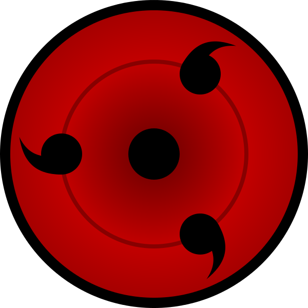
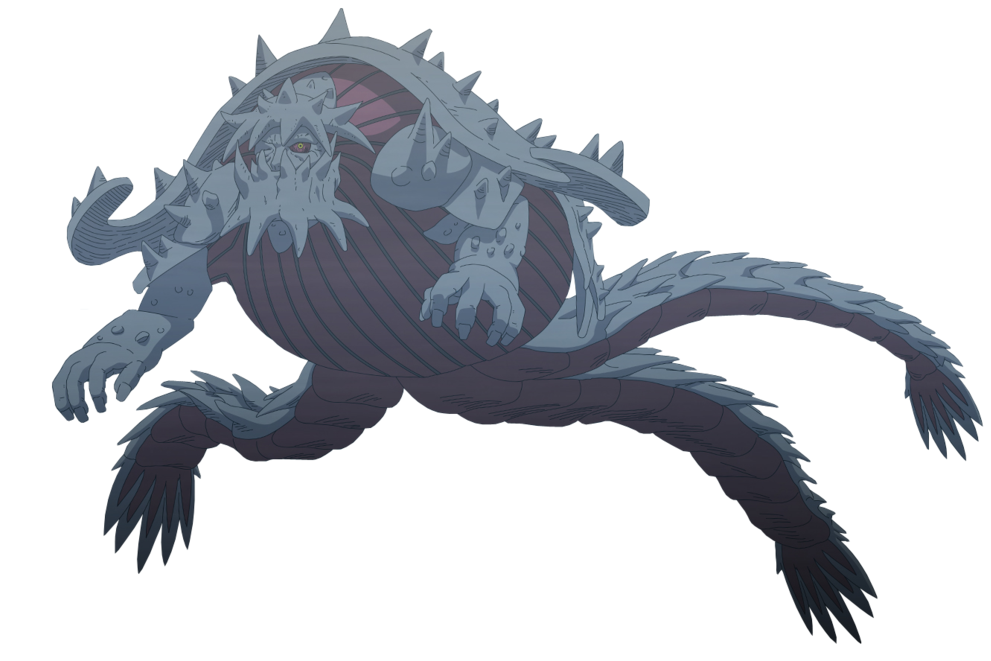

Doujutsus
Es un tipo de técnica ninja, generalmente Kekkei Genkai, que existe en el universo ficticio del manga y anime Naruto.
Son habilidades ninja genéticas que se manifiestan en los ojos, lo que les permite percibir chakra de una forma u otra. Al ser un subproducto del Kekkei Genkai, los dōjutsus no se clasifican como uno de los principales tipos de jutsu. No requieren el uso de sellos y a veces facilita el uso o la defensa contra el genjutsu, taijutsu y ninjutsu y para derrotar al oponente. Todos los dōjutsu son conocidos también por proporcionar al usuario algunas habilidades únicas, como un campo ampliado de las capacidades de visión o como forma de predecir movimientos enemigos, etc.
Algunos de doujutsus pueden ser:
Rinne Sharingan
El Rinne Sharingan (輪廻写輪眼, Rinne Sharingan literalmente «Ojo Copiador Giratorio de Saṃsāra») es el predecesor del Rinnegan y el Sharingan. Este ojo se caracteriza por su onda, como el patrón que se extiende a lo largo del globo ocular, con un fino iris rojo y escleróticas, conteniendo nueve tomoe, tres en cada una de las escleróticas
Rinnegan
El Rinnegan (輪廻眼, Rinnegan, literalmente «Ojo de Saṃsāra») es uno de los tres grandes Dōjutsu junto al Sharingan y Byakugan y considerado el más poderoso entre ellos,[4] que apareció por primera vez en un miembro del Clan Ōtsutsuki. Los usuarios del Rinnegan se dice que son enviados de los cielos para convertirse en un Dios de la Creación que detendrá el desorden del mundo o a un Dios de la Destrucción que reducirá todo a nada. El Rinnegan se caracteriza por su patrón de onda, que se extiende a lo largo de los globos oculares, con finas iris púrpura grisáceas y escleróticas.
sharingan
existen tres versiones distintas o evolucionadas del Sharingan
Sharingan

El Sharingan (写輪眼, Sharingan, literalmente «Ojo Copiador Giratorio») es uno de los tres grandes Dōjutsu junto al Byakugan y Rinnegan. Es el Kekkei Genkai del clan Uchiha, que aparece de manera selectiva entre sus miembros. Una versión inferior del Rinne Sharingan de Kaguya Ōtsutsuki, el Sharingan se manifestó primeramente en Indra Ōtsutsuki. En el anime se manifestó por primera vez en Hagoromo Ōtsutsuki.
Según Tobirama Senju, el Sharingan es el ojo que refleja el corazón (心を写す瞳, Kokoro o utsusu hitomi).
Mangekyou Sharingan

El Mangekyō Sharingan (万華鏡写輪眼, Mangekyō Sharingan, literalmente «Ojo Copiador Giratorio de Caleidoscopio») es una forma avanzada del Sharingan que solo ha sido alcanzada por un puñado de Uchiha en la historia. Se dice que son los «ojos celestiales que ven la verdad de toda la creación sin obstrucción» (天壌の理を掌握せし瞳 tenjō no kotowari o shōakuseshi hitomi?). Esta evolución le da a su usuario el acceso a un gran poder y la capacidad de realizar técnicas prohibidas y misteriosas; además, se distingue de un Sharingan normal por su apariencia, que cambia drásticamente su diseño según el portador del dōjutsu.
Mangekyou Sharingan Eterno
Mangekyō Sharingan Eterno (永遠の万華鏡写輪眼, Ojo Copiador Giratorio Caleidoscopio de Eternidad) es la metamorfosis del Mangekyō Sharingan. Es obtenido al quitarle el Mangekyō Sharingan a otro Uchiha e implantárselo. Al hacerlo ambos diseños se fusionan, el poseedor de dicho Sharingan puede utilizar las técnicas del Mangekyō Sharingan y sigue viendo sin que se le deteriore o pierda completamente la vista, es un Sharingan relativamente perfecto.
Byakugan

El Byakugan (白眼, Byakugan, literalmente «Ojo Blanco») es uno de los tres grandes Dōjutsu junto al Sharingan y Rinnegan. Es un Kekkei Genkai originado en el clan Ōtsutsuki, y heredado por sus descendientes, el clan Hyūga.
Tenseigan
El Tenseigan (転生眼, Tenseigan literalmente «Ojo de Reencarnación») es un Dōjutsu despertado por el Clan Ōtsutsuki de la Luna a partir del Byakugan. Éste se caracteriza por una pupila azul rodeada por un iris con forma de flor de color azul y blanca.
Ketsuryugan

El Ketsuryūgan (血龍眼, Ketsuryūgan, literalmente «Ojo del Dragón de Sangre») es un dōjutsu que aparece en ciertos individuos del Clan Chinoike. Es reconocido por colorar todo el globo ocular de sus usuarios de color rojizo, otorgándole una apariencia especial a sus usuarios, caracterizado como poseedores de ojos "rojos como la sangre".
El Ketsuryūgan otorga la habilidad de controlar el hierro que contiene la sangre como componente del usuario a placer, así como cualquier otra sustancia con una alta concentración de hierro. También otorga excelentes habilidades en el Genjutsu
Se activa incrustando chakra en el cuerpo del individuo para poder hacer uso de su sangre a voluntad del usuario
Jogan
El Jōgan (浄眼, Jōgan; literalmente «Ojo Puro») es un Dōjutsu despertado por Boruto Uzumaki en su ojo derecho.
En el anime, durante la juventud de Boruto, el Jōgan se activaba de forma independiente en presencia de algún peligro oculto. El Jōgan puede percibir el flujo de chakra, permitiendo a Boruto observar los cambios en el chakra de un individuo y también rastrearlo mediante el mismo. Es capaz de observar el Sistema de Circulación de Chakra y mostrar un punto clave en él, además de poder ver las barreras que conectan los mundos o espacio–tiempo. Aparentemente también es capaz de observar las distorsiones en el espacio causadas por técnicas de espacio–tiempo.
Otros tipos de ojos que podemos encontrar en naruto aunque no sean Kekkei Genkai son:
Dōjutsu de Ranmaru
El Dōjutsu de Ranmaru es un Kekkei Genkai . Incluye visión penetrante, lo que altera los ojos con Kekkei Genkai, y una extensión de partículas de chakra único. Él tenía la habilidad de usar sus habilidades de visión para penetrar las paredes de su pequeña choza y ver el mundo exterior. También realizar un genjutsu (que crea sistemas circulatorios de chakra a objetos inanimados, haciendo que el enemigo ataque al señuelo) que puede engañar incluso el Byakugan. Esta capacidad no parece tener el rango del Byakugan, pero en realidad tiene la capacidad para hacer frente al dojutsu de los Hyūga.
A Ranmaru también le permite localizar y rastrear a los demás, mediante la detección de chakra, el chakra desde largas distancias, y los cambios de chakra de un individuo. También es capaz de sentir y saber la cantidad de personas que están presentes. Ranmaru ha demostrado tener una percepción y las facultades de análisis no muy diferentes al Sharingan, lo que significa que Ranmaru puede comprender todos los detalles que él ve para predecir el siguiente movimiento del oponente. Él ha contribuido principalmente a ayudar con esta capacidad a Raiga y hacerlo formidable en la batalla, y podrían haberlo ayudado a convertirse en uno de los Siete Espadachines de la Niebla. También puede ver la propia fuerza de la vida, lo que le permitió determinar que Raiga, que había caído recientemente en la batalla, todavía estaba vivo. También fue capaz de transferir parte de su propia fuerza de vida a Raiga. Ranmaru tambien podia ampliar su mirada para ver donde sea lo que hace que tambien pueda verse a si mismo o los que tiene detras.
Dōjutsu de Shion

Como la sacerdotisa del País de los Demonios, Shion nació con dos regalos especiales. El primero es la habilidad para sellar a los demonios, a los que ha estado entrenando en toda su vida, aunque ella no tenía idea de que el uso del sello era para fusionarse con Mōryō. El segundo regalo es predecir la muerte de alguien, este segundo regalo es un mecanismo de defensa para proteger a la sacerdotisa, su poder le permite hacer que su espíritu regrese en el tiempo hasta el momento de su muerte, permitiéndole evitar su propia muerte haciendo que alguien más muera en su lugar. Por extraño que parezca, a Shion en verdad le duele que todas esas personas hayan tenido que sacrificarse de modo que ella pudiera cumplir con su deber. Shion hizo 100 predicciones, y nunca se ha equivocado, hasta la predicción sobre de Naruto Uzumaki, que en su esfuerzo por protegerlo, casi pierde su vida
Sage Mode

El Modo Sabio (仙人モード, Sennin Mōdo) es el resultado de la unión armónica entre la energía natural, la energía física y la energía espiritual. Gracias a esto, el usuario es capaz de aumentar sus niveles de chakra, es capaz de fortalecer sus capacidades físicas y tiene la habilidad de utilizar jutsus con un incremento de poder obteniendo resultados superiores a los habituales en los campos del Ninjutsu, Taijutsu y Genjutsu.
Senjutsu (仙術, Técnicas del Sabio) o Senpō (仙法; literalmente Arte Sabio) se refiere a un campo especializado de jutsu que permite al usuario sentir y reunir la Energía de la Naturaleza (自然エネルギー, Shizen Enerugī) que rodea el terreno para utilizarla a su favor. Los especialistas del Senjutsu pueden hacer que dicha energía penetre en ellos y se combine con su propio Chakra (la energía espiritual y física), creando un nuevo y poderoso Chakra llamado Chakra Senjutsu (仙術チャクラ, Senjutsu Chakura) o Chakra del Sabio (仙人チャクラ, Sennin Chakura).
Bijuu Mode
Las Bestias con Cola (尾獣, Bijū) son nueve gigantescas criaturas que se caracterizan por tener un número determinado de colas, que van desde una hasta nueve, y que originalmente eran partes del Diez Colas quien es la bestia con cola original; éstas son formas vivientes de chakra.
A veces éstos son referidos también como “Monstruos de Chakra” (チャクラのバケモノ, Chakura no Bakemono), en sus portadores, los Jinchūriki, obtienen poder y un chakra inmensamente superior que el de un shinobi promedio, éstos se le pueden reconocer ya por liberar un chakra rojo.
Shukaku
Bijuu de 1 cola


Matatabi
Bijuu de 2 colas

Isobu
Bijuu de 3 colas

Son Goku
Bijuu de 4 colas

Kokuö
Bijuu de 5 colas

Saiken
Bijuu de 6 colas

Chomei
Bijuu de 7 colas
Gyüki
Bijuu de 8 colas
kurama
Bijuu de 9 colas
kurama

kurama Sage Mode

Este tipo de ojo se da al comninarse los chakras de naruto en el modo sabio junto con el chakra de kurama